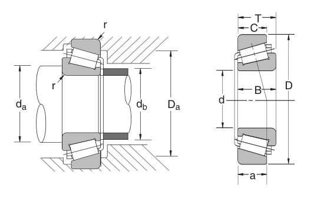

32340 is a NSK tapered roller bearing, bore 200 mm, O.D. 420 mm, width 138 mm, dynamic rating 409,000 lbs. Dimensions, drawing, interchanges and price.
Original catalogue drawing - NSK catalogue, page 115

Scanned from the manufacturer catalogue page listing this part number. All part numbers printed on that table share the same drawing.
Scale cross-section
Blue = inner / outer ring, yellow = rolling element. Drawn to scale from this part's own
dimensions for selection reference only - not a manufacturing or assembly drawing.
Dimension table (mm / inch)
Symbol
Dimension
mm
inch
d
Bore diameter
200
7.874
D
Outside diameter
420
16.5354
B
Inner-ring / bearing width
138
5.4331
T
Overall assembly width
146
5.748
C
Cup / outer-ring width
115
4.5276
Notes
Weights are given in kg. Load ratings are shown in both the original catalogue units and the converted value (1 N = 0.2248 lbf). Data is provided for selection reference only - confirm against the latest official catalogue before ordering.
Main dimensions
Bore d (mm)
200
Bore d (in)
7.8740
Outside dia. D (mm)
420
Outside dia. D (in)
16.5354
Width B (mm)
138
Width B (in)
5.4331
Overall width T (mm)
146
Overall width T (in)
5.7480
Cup width C (mm)
115
Cup width C (in)
4.5276
Load ratings & speeds
Basic dynamic load rating Cr (lbs)
409000
Basic static load rating Cor (lbs)
645000
Limiting speed - grease (rpm)
800
Limiting speed - oil (rpm)
1,100
Weight
Weight (kg)
90.914
Mounting dimensions (fillets / shoulders)
Chamfer r (in)
0.16
Shaft shoulder da min (in)
9.409
Housing shoulder Da max (in)
15.669
Shaft shoulder db max (in)
9.961
Bearing life (ISO 281 basic rating life)
C / P
Equivalent load P (N)
L10 (106 rev)
L10h at 200 rpm
4
454,831
102
8,466
6
303,220
392
32,708
8
227,415
1,024
85,333
10
181,932
2,154
179,536
15
121,288
8,323
693,622
Basic rating life per ISO 281: L10 = (C/P)10/3 with C = 1,819,323 N. Hours = L10 x 106 / (60n). Life-modification factors for lubrication, contamination and temperature (aISO) are not included.
Source & traceability
Brand
NSK
Source catalogue
NSK inch product catalogue
Catalogue page
p.117 (dimensions) / p.118 (ratings)
Dimensions in inches and millimetres, load ratings in lbs.
Send us the quantity you need and we will come back with price and
lead time, normally within 24 hours. Equivalent parts from other brands can be quoted at the same time.